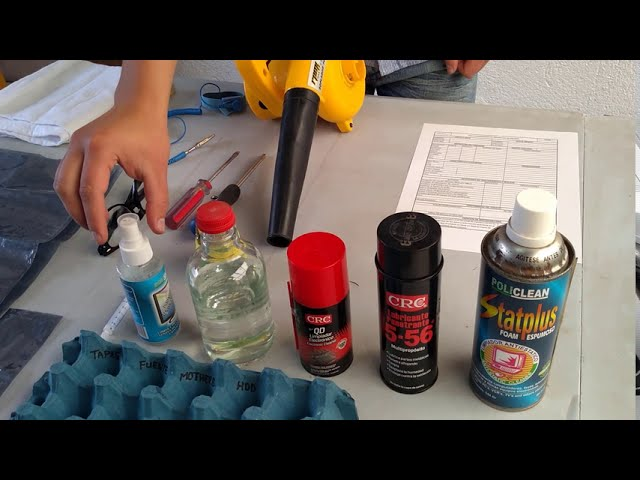
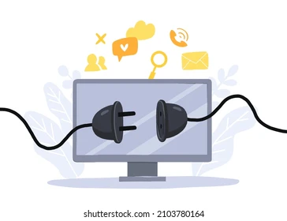
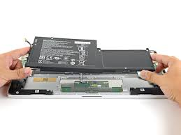
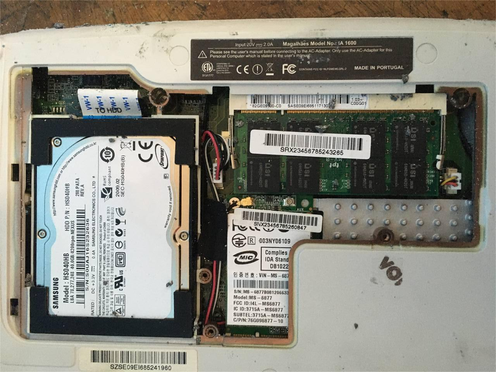
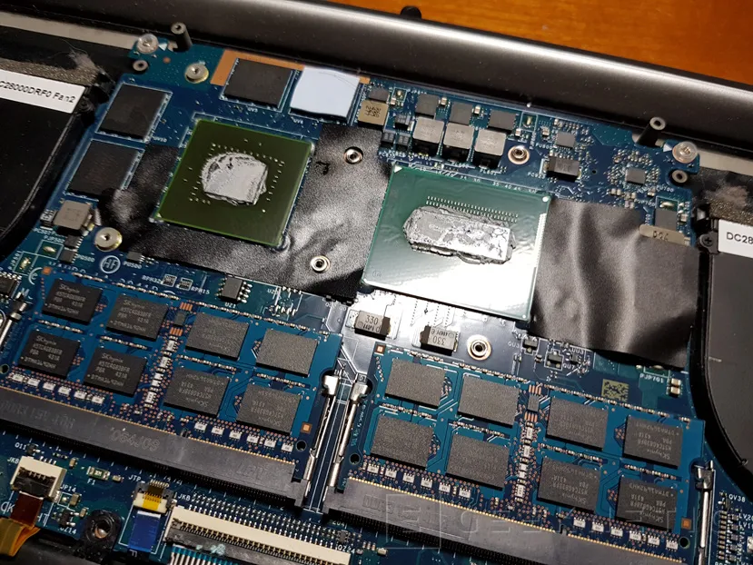
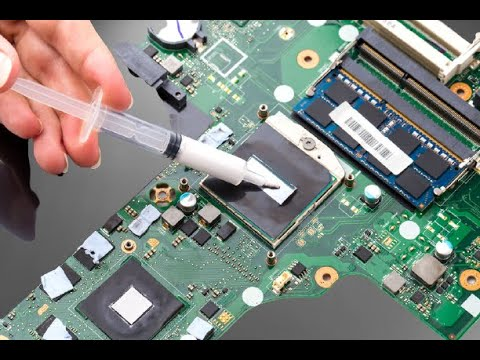
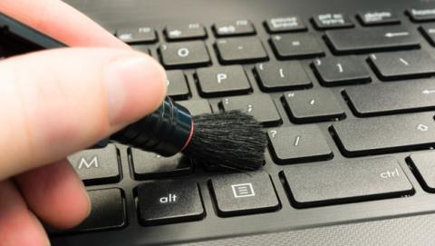
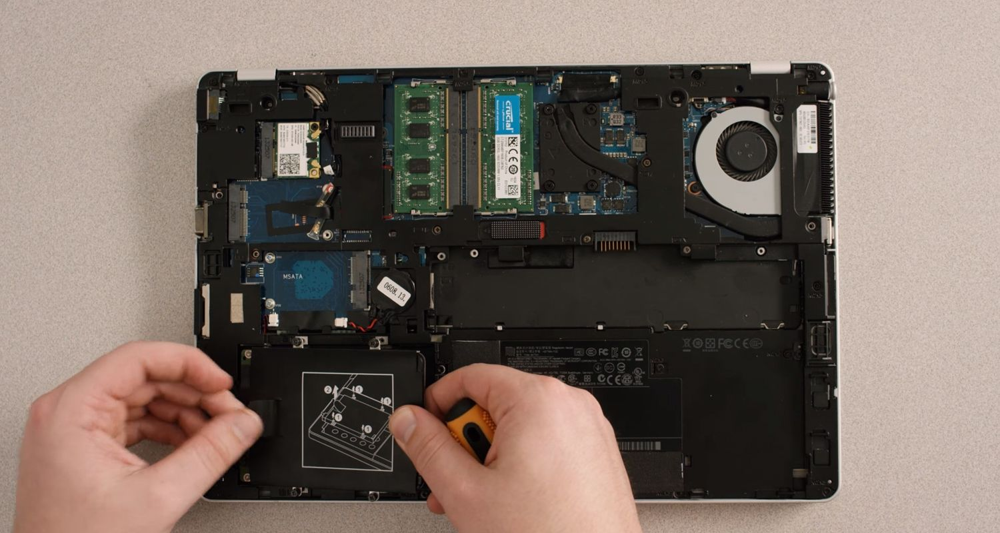
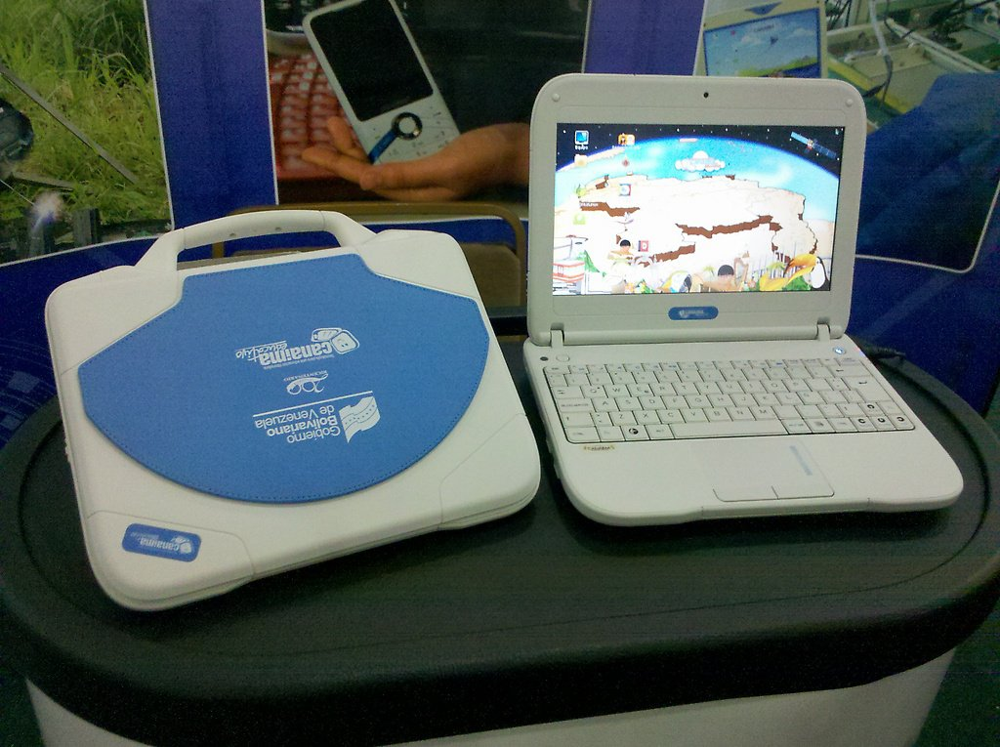

¿Qué es el mantenimiento?
El mantenimiento es un conjunto de acciones técnicas planificadas que permiten conservar equipos, herramientas y sistemas en un estado óptimo de funcionamiento. Su objetivo principal es garantizar seguridad, eficiencia, durabilidad y confiabilidad en el uso de los recursos disponibles.
En el entorno educativo, como en la U.E.E Jorge Semidey, el mantenimiento es fundamental para asegurar el correcto funcionamiento del mobiliario, equipos electrónicos, herramientas didácticas y particularmente los equipos Canaima que forman parte del proceso pedagógico de los estudiantes.
Objetivos fundamentales del mantenimiento
- Evitar fallas inesperadas en equipos y sistemas.
- Prolongar la vida útil de los dispositivos.
- Reducir costos de reparación a largo plazo.
- Garantizar la seguridad de los usuarios.
- Optimizar el rendimiento y desempeño de los equipos.
Tipos de mantenimiento
Mantenimiento Preventivo
se refiere al conjunto de acciones y procedimientos planificados, tanto de hardware como de software, destinados a garantizar el funcionamiento óptimo de los equipos y sistemas, prevenir fallos inesperados, mejorar el rendimiento, y prolongar la vida útil de los activos tecnológicos.
Mantenimiento Correctivo
es una estrategia avanzada y basada en datos. Utiliza herramientas y técnicas de monitoreo continuo o periódico para medir la condición real y el rendimiento de los equipos mientras están en funcionamiento. El objetivo es predecir cuándo ocurrirá un fallo para poder programar el mantenimiento justo antes de que suceda.
Mantenimiento Predictivo
es una estrategia avanzada y basada en datos. Utiliza herramientas y técnicas de monitoreo continuo o periódico para medir la condición real y el rendimiento de los equipos mientras están en funcionamiento. El objetivo es predecir cuándo ocurrirá un fallo para poder programar el mantenimiento justo antes de que suceda.
Mantenimiento Proactivo
es una filosofía de gestión más amplia que busca identificar y eliminar las causas raíz de los fallos (de raíz). Va más allá de simplemente arreglar o prevenir fallos; busca mejorar la fiabilidad general y la mantenibilidad de los sistemas.
Normas de Seguridad en el mantenimiento
Antes de realizar cualquier trabajo se deben seguir normas básicas:
- Trabajar con las manos limpias y libres de grasa.
- Evitar usar ropa suelta o accesorios que puedan engancharse.
- Desconectar el equipo antes de abrirlo.
- Utilizar herramientas aisladas y en buen estado.
- Utilizar guantes antiestáticos si se manipulan componentes internos.
- Mantener el área de trabajo limpia, organizada y bien iluminada.
- No forzar piezas o conectores: cada parte tiene su mecanismo correcto.
- Descargar electricidad estática tocando una superficie metálica antes de intervenir el equipo.
Herramientas necesarias
Para Ver todas las herramientas necesarias porfavor presione el botón y le aparecerá una lista detallada.
Guía de mantenimiento completo de una Laptop Canaima
A continuación se presenta un procedimiento detallado para realizar un mantenimiento preventivo y correctivo básico a una laptop Canaima, siguiendo estándares técnicos y de seguridad.
Paso 1: Preparación del área de trabajo
Asegúrate de trabajar sobre una mesa firme, limpia y libre de humedad. Ten a mano todas las herramientas necesarias.
Paso 2: Apagar y desconectar la laptop
La laptop debe estar completamente apagada, desconectada del cargador y sin dispositivos externos.
Paso 3: Retirar la batería
En los modelos Canaima desmontables, libera el seguro y extrae la batería para evitar riesgos eléctricos.
Paso 4: Abrir la carcasa
Utiliza una espátula plástica para liberar las pestañas. Evita herramientas metálicas para no dañar el plástico.
Paso 5: Limpieza interna general
Usa brocha fina para eliminar polvo y residuos, y aire comprimido para soplar zonas de difícil acceso.

Paso 6: Verificar estado de componentes
Observar uno por uno en que estado se encuentras los componentes internos de la canaima.
Paso 7: Cambio de pasta térmica
Retira el disipador, limpia la pasta antigua con alcohol isopropílico y aplica una nueva capa delgada.
Paso 8: Limpieza del teclado y pantalla
Utiliza un paño de microfibra ligeramente humedecido. No aplicar líquidos directamente sobre la pantalla.
Paso 9: Ensamblaje final
Coloca nuevamente cada tornillo en su posición original y verifica que la carcasa cierre sin forzar.
Paso 10: Pruebas de funcionamiento
Enciende la laptop, verifica temperatura, sonido, teclado, puertos y rendimiento general.
